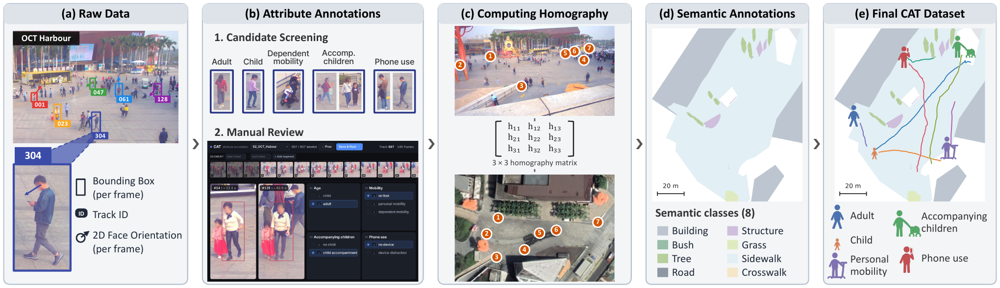
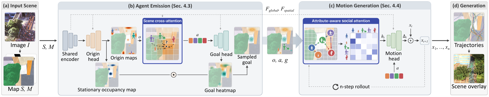

ACG is the first crowd generation pipeline that models who appears in a scene and how their attributes shape the way they move: children walk slower and closer to others, phone users stop longer, personal-mobility riders go faster. It is trained on CAT, a new crowd trajectory dataset with world-coordinate tracks, scene semantic maps and pedestrian attribute annotations.
A crowd generated by ACG for the OCT Harbour scene, rendered in CARLA. Each pedestrian is emitted with attributes sampled from the scene map, so phone users, adults accompanying children, children and personal-mobility riders appear where they do in the real crowd and then move the way their attributes dictate. Played at half speed.
Crowds differ from place to place, and behavior differs from person to person. For example, children often walk with their parents around schools, while phone users tend to pay less attention to their surroundings. Capturing this diversity is essential for realistic crowd simulation. However, since datasets that provide both scene maps and pedestrian attribute annotations remain limited, existing crowd generation models do not explicitly learn attribute-dependent patterns. In this paper, we introduce an attribute-aware crowd generation pipeline. To do this, we first construct a crowd trajectory dataset with world-coordinate trajectories, scene semantic maps, and annotations for pedestrian attributes selected based on social studies. Building on this dataset, we propose a framework that models how attribute distributions vary across scenes and how these attributes form agents' motion patterns. Here, we incorporate two attention mechanisms: a scene cross-attention for predicting attributes from agent origins and scene maps, and an attribute-aware social attention for capturing the relative influence of each neighbor based on both agents' attributes and their relative positions. Extensive experiments demonstrate that our model outperforms baselines on public datasets as well as our attribute-annotated dataset. As an application, robot navigation policies trained on our generated crowds achieve lower collision rates while maintaining comparable success rates. To the best of our knowledge, our pipeline is the first attempt to enable attribute-aware crowd generation.
CAT (Crowd Attribute and Trajectory) is built from six gigapixel PANDA sequences: a university canteen, the OCT Harbour plaza, the Xili crossroad, a primary school, a university campus and the Huaqiangbei commercial street. Every pedestrian is annotated with four attribute groups chosen from studies of pedestrian behaviour: age (adult or child), mobility mode (on foot, personal mobility, dependent mobility), accompanying children and phone use. Scene-specific homographies lift the tracks to world coordinates, and eight-class semantic maps (building, structure, bush, grass, tree, sidewalk, road, crosswalk) describe each scene.
Building CAT. Pedestrian tracks from the gigapixel video, attribute labels reviewed across frames, image-to-world mapping on the ground plane, and the six scenes recreated in simulation for the experiments below.

| Attribute-level statistics in CAT | Adult, on foot | Child | Personal mobility | Accompanying a child | Phone use |
|---|---|---|---|---|---|
| Pedestrians | 2,477 | 530 | 168 | 303 | 403 |
| Speed (m/s) | 1.09 ± 0.34 | 0.90 ± 0.30 | 2.85 ± 1.30 | 0.87 ± 0.26 | 1.05 ± 0.40 |
| Acceleration (m/s²) | 0.34 ± 0.26 | 0.24 ± 0.16 | 0.58 ± 0.36 | 0.22 ± 0.14 | 0.30 ± 0.22 |
| Stop time (s) | 3.5 [2.3, 9.4] | 5.5 [3.0, 13.9] | 4.0 [2.5, 11.1] | 5.0 [3.0, 13.5] | 7.6 [3.0, 25.2] |
| Neighbour distance (m) | 1.12 [0.72, 1.85] | 0.59 [0.44, 1.04] | 1.99 [1.26, 3.26] | 0.67 [0.51, 1.09] | 1.70 [1.05, 2.29] |
| Companion rate (%) | 37 | 62 | 12 | 63 | 22 |
Speed and acceleration: mean ± standard deviation; stop time and neighbour distance: median [Q1, Q3]. Children walk more slowly and closer to others than adults, personal-mobility riders are fast and keep their distance, phone users stop for twice as long and walk alone more often. These differences hold scene by scene, and ACG is built to reproduce them.
A shared U-Net encoder turns the semantic map, the traversable mask and position heatmaps into global and spatial scene features used by two modules. Agent emission samples each agent's origin from a scene-conditioned origin map, then a scene cross-attention predicts the four attribute distributions from the local feature at that origin and the global scene tokens; the sampled attributes modulate the goal head through FiLM. Motion generation predicts the next displacement autoregressively. Its attribute-aware social attention adds a learned bias Bij = ϕrel(rij) + ϕpair(ei, ej, rij) to the query–key scores, so two agents at the same relative position can attend to each other differently depending on who they are, and the attribute embedding scales the displacement. Both modules are trained jointly with cross-entropy for origins, goals and attributes, a trajectory loss, and a behaviour-matching loss that uses an attribute-conditioned discriminator, per-attribute speed quantiles and nearest-neighbour spacing.

Crowds generated for the CAT scenes and rendered in CARLA. The first group compares the attribute mix of a real crowd with an ACG crowd generated from the scene map alone; the second compares how CrowdES and ACG move one pedestrian group, against the value measured in CAT. Rendering quality and walking animations are outside the scope of the comparison.
SARL, RGL, LSTM-RL and CrowdNav++ are trained on crowds generated by either CrowdES or ACG, then evaluated on both generators' crowds in unseen CAT scenes. Training on ACG crowds lowers the collision rate of all four policies under both evaluation crowds, while success rates stay comparable or improve.
Three delivery episodes, two training crowds. Same scenes and goals; the policy trained on CrowdES crowds (top) collides with a child in the middle episode, the policy trained on ACG crowds (bottom) detours and keeps a larger distance to every pedestrian. Played at 1.5× speed.
| Navigation policy | Training crowd | Success ↑ | Collision ↓ | Success ↑ | Collision ↓ |
|---|---|---|---|---|---|
| Evaluated on CrowdES crowds | Evaluated on ACG crowds | ||||
| SARL | CrowdES | 0.964 | 0.022 | 0.852 | 0.120 |
| ACG (ours) | 0.956 | 0.018 | 0.892 | 0.074 | |
| RGL | CrowdES | 0.938 | 0.051 | 0.852 | 0.127 |
| ACG (ours) | 0.966 | 0.021 | 0.908 | 0.074 | |
| LSTM-RL | CrowdES | 0.967 | 0.024 | 0.865 | 0.113 |
| ACG (ours) | 0.973 | 0.017 | 0.890 | 0.092 | |
| CrowdNav++ | CrowdES | 0.611 | 0.090 | 0.491 | 0.245 |
| ACG (ours) | 0.553 | 0.064 | 0.485 | 0.157 | |
Success: episodes in which the robot reaches its goal without a collision; collision: episodes with a robot–pedestrian collision. Bold marks the better value within each policy. Training RGL on ACG crowds cuts its collision rate from 5.1% to 2.1% and raises its success rate from 93.8% to 96.6% on CrowdES crowds.
| Crowd generation | Dens. | Freq. | Cov. | Pop. | Kin. | DTW | Div. | Col. (%) |
|---|---|---|---|---|---|---|---|---|
| CAT (ours), 12 evaluations | ||||||||
| SE-ORCA | 0.553 | 0.482 | 0.359 | 0.167 | 0.400 | 49.27 | 0.250 | 0.001 |
| VAE | 0.486 | 0.092 | 0.074 | 0.160 | 0.607 | 37.68 | 0.253 | 0.024 |
| TRACE | 0.422 | 0.124 | 0.058 | 0.148 | 0.775 | 44.00 | 0.229 | 0.017 |
| CrowdES | 0.422 | 0.090 | 0.040 | 0.154 | 0.607 | 37.48 | 0.251 | 0.025 |
| ACG (ours) | 0.327 | 0.064 | 0.057 | 0.117 | 0.343 | 24.62 | 0.340 | 0.001 |
| ETH/UCY, five-scene average | ||||||||
| SE-ORCA | 0.130 | 0.086 | 0.086 | 0.670 | 0.495 | 1.310 | 0.243 | 0.025 |
| VAE | 0.132 | 0.086 | 0.086 | 0.670 | 0.690 | 1.676 | 0.274 | 1.737 |
| TRACE† | 0.089 | 0.053 | 0.053 | 0.315 | 1.095 | 0.988 | 0.310 | 1.221 |
| CrowdES | 0.081 | 0.053 | 0.053 | 0.283 | 0.337 | 0.933 | 0.289 | 0.916 |
| ACG (ours) | 0.057 | 0.031 | 0.031 | 0.191 | 0.418 | 0.912 | 0.299 | 0.005 |
| SDD | ||||||||
| SE-ORCA | 0.058 | 0.047 | 0.044 | 0.540 | 0.893 | 6.645 | 0.377 | 0.048 |
| VAE | 0.052 | 0.052 | 0.047 | 0.678 | 1.078 | 7.881 | 0.387 | 2.470 |
| TRACE† | 0.044 | 0.031 | 0.030 | 0.430 | 0.909 | 5.519 | 0.346 | 0.161 |
| CrowdES | 0.038 | 0.033 | 0.030 | 0.463 | 0.650 | 6.352 | 0.354 | 0.411 |
| ACG (ours) | 0.040 | 0.031 | 0.030 | 0.459 | 0.631 | 5.845 | 0.380 | 0.000 |
| GCS† | ||||||||
| SE-ORCA | 1.099 | 0.195 | 0.195 | 2.539 | 1.088 | 3.212 | 0.244 | 0.002 |
| VAE | 0.978 | 0.376 | 0.376 | 2.259 | 1.040 | 3.836 | 0.319 | 10.624 |
| TRACE | 0.686 | 0.341 | 0.341 | 1.584 | 0.401 | 2.483 | 0.334 | 3.492 |
| CrowdES | 0.332 | 0.121 | 0.121 | 0.768 | 1.192 | 5.064 | 0.316 | 10.279 |
| ACG (ours) | 0.328 | 0.115 | 0.115 | 0.757 | 0.393 | 2.825 | 0.320 | 2.672 |
Scene-level realism (density, frequency, coverage, population) and agent-level similarity (kinematics, DTW, diversity, collision rate) following CrowdES; lower is better except diversity. CAT is evaluated with two-fold temporal cross-validation on six scenes; ETH/UCY is averaged over five scenes; † marks reimplemented baselines, and GCS uses a common test split built for this study. Best and second-best per column are bold and underlined.
| Attribute fidelity on CAT | Real | CrowdES | ACG (ours) | Real | CrowdES | ACG (ours) |
|---|---|---|---|---|---|---|
| Agent proportion | Mean speed (m/s) | |||||
| Adult | 0.938 | 0.972 | 0.942 | 0.88 | 0.98 | 0.94 |
| Child | 0.154 | 0.097 | 0.133 | 0.58 | 0.82 | 0.79 |
| Personal mobility | 0.045 | 0.026 | 0.050 | 2.23 | 0.39 | 2.06 |
| Dependent mobility | 0.017 | 0.002 | 0.007 | 0.69 | 0.21 | 0.87 |
| Accompanying children | 0.099 | 0.022 | 0.057 | 0.62 | 0.90 | 0.82 |
| Phone use | 0.119 | 0.092 | 0.125 | 0.83 | 1.22 | 1.15 |
Proportions and mean speeds pooled over the twelve CAT evaluations. Bold marks the smaller absolute error against the real crowd; ACG is closer in all twelve comparisons. CrowdES moves personal-mobility riders at 0.39 m/s, ACG at 2.06 m/s against 2.23 m/s in the data. Removing the scene cross-attention raises the frequency error from 0.064 to 0.079; removing the social attention raises the kinematic error and DTW (Table 6 of the paper).
1 min 19 s. Building CAT, scene-specific crowd composition, motion by pedestrian attribute, and robot navigation policies trained on generated crowds. ACG generates attributes and trajectories only; characters, walking animations and body poses are not part of this work.